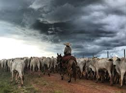

A Excelência do Gado Paranaense
O Paraná possui um dos sistemas de produção de gado de corte mais avançados do país, combinando tradição com tecnologia de ponta para oferecer carne de qualidade superior.
Com clima favorável e solos férteis, as fazendas do estado produzem animais com excelente acabamento de carcaça, atendendo aos mais exigentes mercados nacionais e internacionais.
A pecuária paranaense investe continuamente em genética, nutrição e manejo, garantindo sustentabilidade e bem·estar animal em todo o processo produtivo.
Genética avançada
Manejo sustentável
Rastreabilidade
Qualidade certificada


